Integração com a Shopee
A integração com a Shopee liga a loja do canal ao ERP da Olist. Com ela, você recebe pedidos, envia produtos, imagens, estoque e preços, sincroniza situações, define regras de frete, etiquetas e pagamento, trata a NF-e, autentica o chat e configura o Fulfillment.
A configuração fica em Início > Integrações, no card Shopee, em gerenciar, nas abas Conexão, Produtos, Pedidos, Mapeamentos e Fulfillment. O impulsionamento fica em Cadastros > Anúncios e dá destaque a até 5 anúncios por 4 horas contínuas.
Pré-requisitos
- Conta na Shopee para autorizar a conexão e o chat.
- Integração já conectada para configurar as abas, receber pedidos e impulsionar anúncios.
- Anúncios já publicados na Shopee para impulsionar.
- Fulfillment exclusivo de contas Full.
- Se a opção não aparecer para você, peça acesso ao administrador da conta.
Importante
- No impulsionamento, selecione até 5 anúncios ao mesmo tempo. O destaque dura 4 horas contínuas e não é possível adicionar novos anúncios durante o ciclo em andamento.
- Inclua todos os itens antes de ativar, para otimizar a cota. A renovação ocorre depois das 4 horas.
- Com a reserva de estoque habilitada, o lançamento automático ao salvar não é recomendado.
- O depósito de Fulfillment é exigido para salvar quando a importação é automática ou manual.
- Coleta Correios, Pegaki-Correios e Correios-Transacional não recebem os dados da NF. Correios recebe.
- Autorize o chat antes de usar as conversas. A Autenticação Chat pode estar desconectada mesmo com o canal conectado.
- Conforme lista de preços só fica disponível se a conta tiver lista de preços. Recursos de preço promocional só ficam disponíveis se a conta tiver preço promocional.
Instruções
Instalar a integração
-
Acesse Início > Integrações.
-
Em adicionar integração, escolha o canal Shopee e clique em instalar.
-
Na aba Conexão, informe o Nome da integração. O campo não é obrigatório na integração já salva.
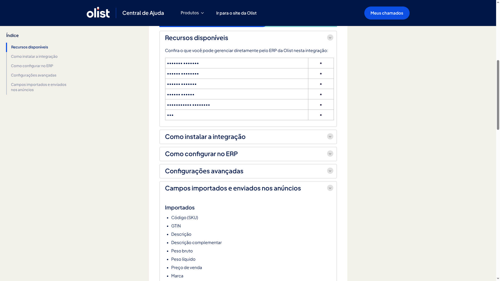
-
Clique em conectar com Shopee para autorizar a loja na conta da Shopee. A tela de conexão fica pronta para essa autorização.
Configurar produtos, estoque e preços
-
Acesse Início > Integrações, abra gerenciar no card Shopee e vá à aba Produtos.
-
Em atualização de estoque, escolha Não atualizar, Enviar saldo físico ou Enviar saldo disponível. O campo não é obrigatório.
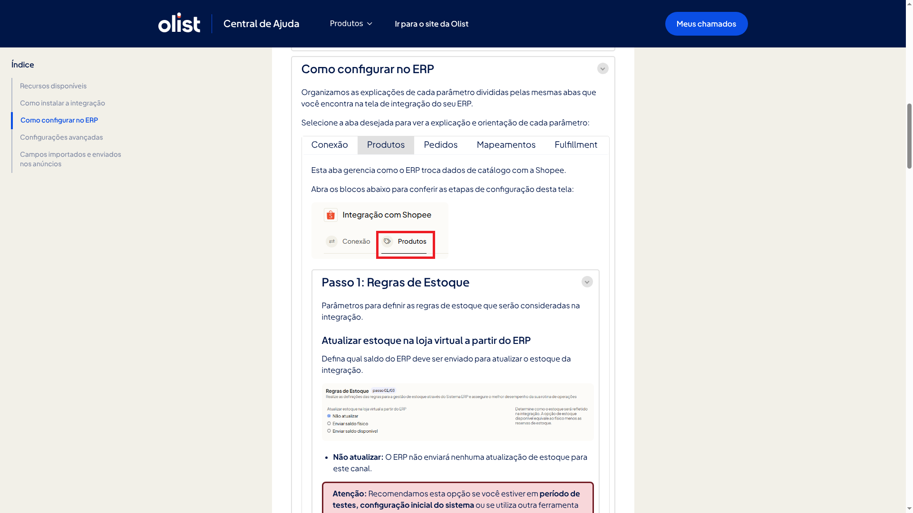
-
Em Lançamento de estoque para saídas, escolha Usar configuração padrão, Manual, Automático ao autorizar a nota fiscal, Automático ao salvar a nota fiscal, Automático ao salvar o pedido ou Automático ao marcar pedido como enviado.
-
Marque Utilizar estoque de segurança se quiser usar a reserva. Se a reserva estiver habilitada, não use o lançamento automático ao salvar.
-
Em preço enviado ao canal, escolha Preço fixo, Conforme lista de preços ou Conforme regras de preço.
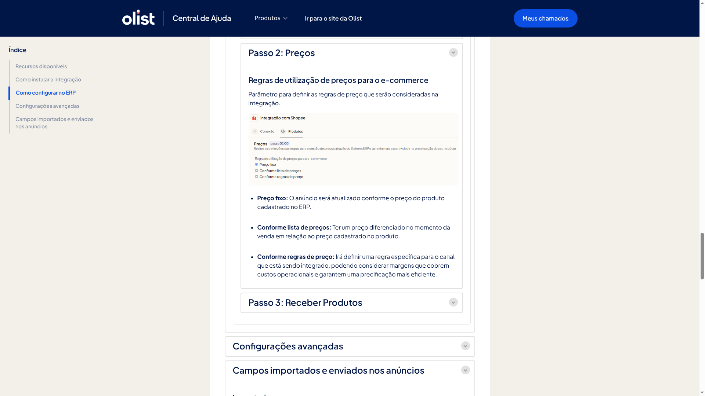
-
Em Enviar imagens dos produtos ao sincronizar, escolha Sim ou Apenas para novos produtos.
-
Em Receber imagens dos anúncios, escolha Importar imagens como anexos ou Apenas URL externa.
-
Marque Importar anúncios com uma variação como anúncios simples se o anúncio de uma variação deve entrar como anúncio simples. Nenhum desses campos de envio e recebimento é obrigatório.
-
Revise catálogo, estoque e preço e salve a integração.
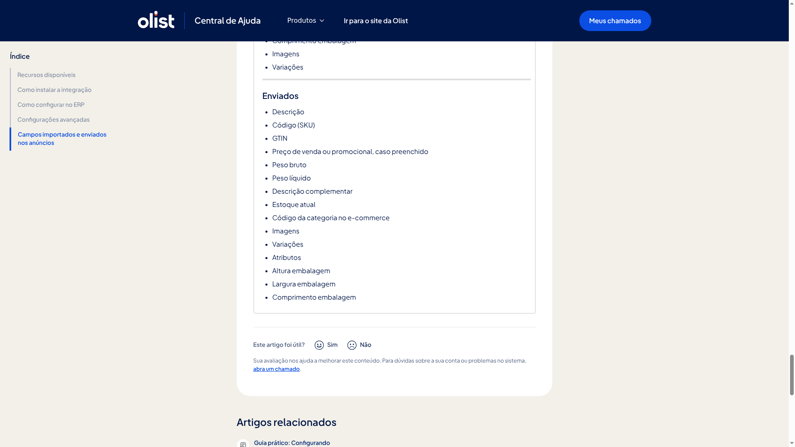
Configurar pedidos e dados fiscais
- Na mesma integração, abra a aba Pedidos.
- Marque o que deve ocorrer na importação. Nenhum item é obrigatório:
- Importar valor do frete
- Formatar nome dos contatos
- Sincronização automática
- Interpretador de endereços
- Importar moedas como desconto
- Importar taxa de cartão como outras despesas
- Organizar envio ao enviar NFe
- Enviar rastreamento ao marcar enviado
- Marcar entregue ao alterar situação
-
Em Completar endereço a partir do CEP, escolha Não, Apenas se bairro não informado ou Sempre.
-
Em Método de impressão de etiquetas, escolha Padrão do Canal, Formato PDF ou Impressora Térmica.
-
Em Intermediador, use a opção da conta. Na tela, a opção é Sem intermediador.
-
Em Valor de pagamento na NF, escolha Utilizar valor de pagamento integrado ou Considerar pagamento como não integrado.
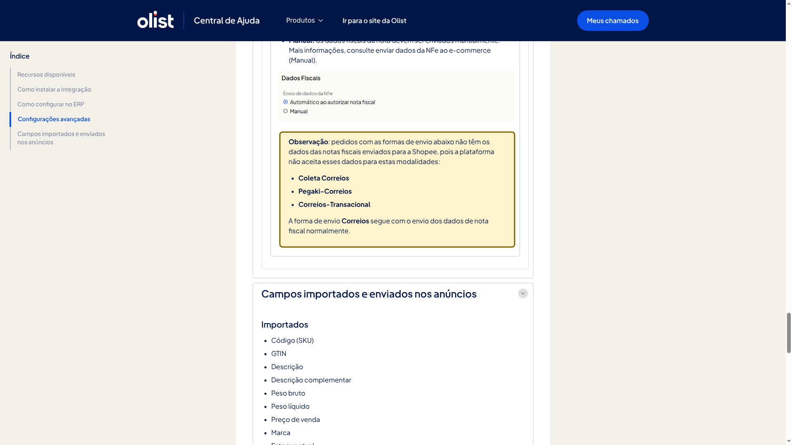
-
Em Envio da NFe, escolha Automático ao autorizar ou Manual.
-
Preencha Bairro alternativo se precisar de um bairro substituto. O campo não é obrigatório.
-
Em Natureza de operação para venda, selecione a natureza da conta.
-
Ligue o controle de ICMS para exibir Natureza para contribuintes ICMS e selecione a natureza da conta.
-
Revise pedidos, etiquetas, pagamento e NF-e e salve a integração.

Mapear situações, recebimentos, frete e categorias
- Abra a aba Mapeamentos da integração Shopee.
- Em situações, confira o de-para do canal para o ERP.
- Use adicionar situações padrão ou adicionar mapeamento para incluir linhas.
- Marque Permite retroceder somente se a situação puder voltar. O campo não é obrigatório.
- Ligue formas de recebimento para exibir Forma padrão de recebimento e Categoria da forma de recebimento. O valor inicial da forma padrão é Não definida. A categoria começa em Selecione.
- Em formas de frete, inclua a linha do frete da conta.
- Em categorias, abra a árvore do canal e atribua a categoria. Salve a integração depois de atribuir.
Configurar Fulfillment
-
Abra a aba Fulfillment em gerenciar da integração Shopee.
-
Marque Importar pedidos do Fulfillment para trazer esses pedidos. As formas de importação são Automaticamente, Manualmente e Não importar.
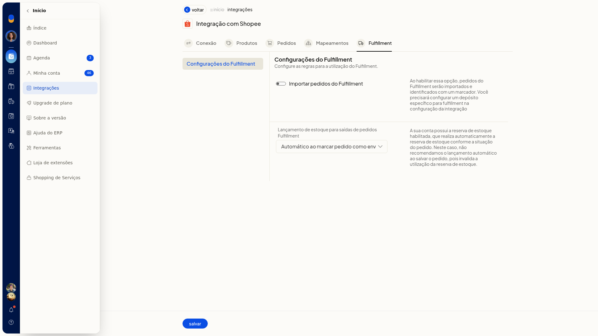
-
Em Lançamento de saídas do Fulfillment, escolha Usar configuração padrão da conta, Manual, Automático ao autorizar a nota fiscal, Automático ao salvar a nota fiscal, Automático ao salvar o pedido ou Automático ao marcar pedido como enviado.
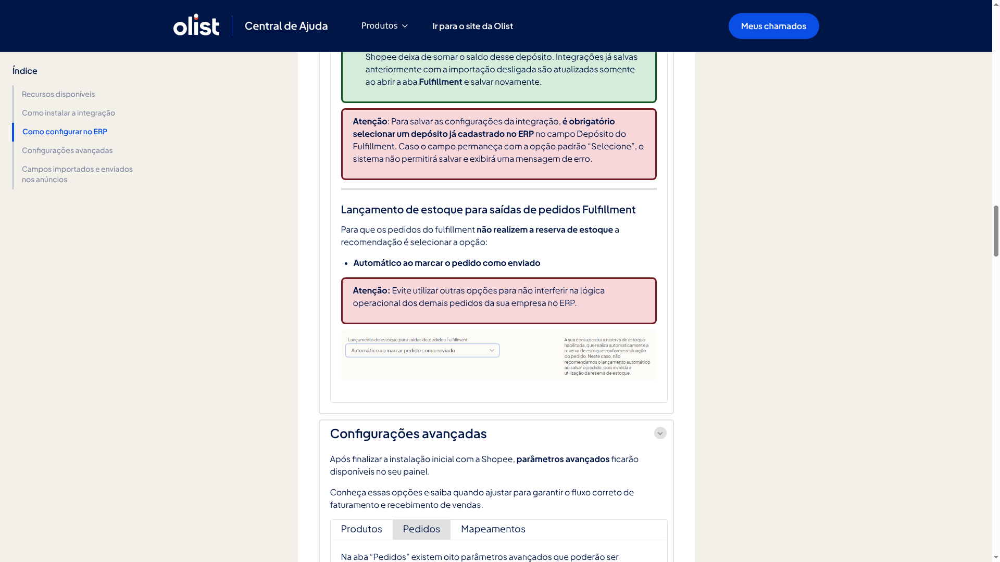
-
Quando a importação não está desligada, o depósito do Fulfillment é criado. Preencha o CNPJ destinatário do depósito de Fulfillment. Esse campo é obrigatório. O CNPJ remetente do depósito de Fulfillment é opcional. O tipo mostrado é Exclusivo canal de venda.
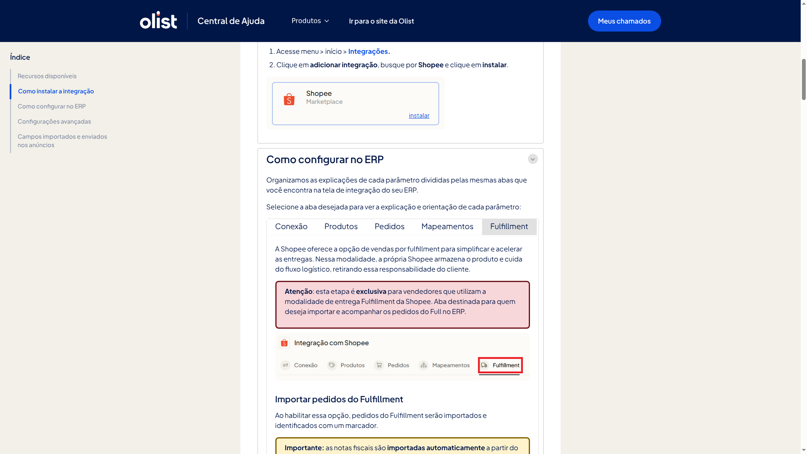
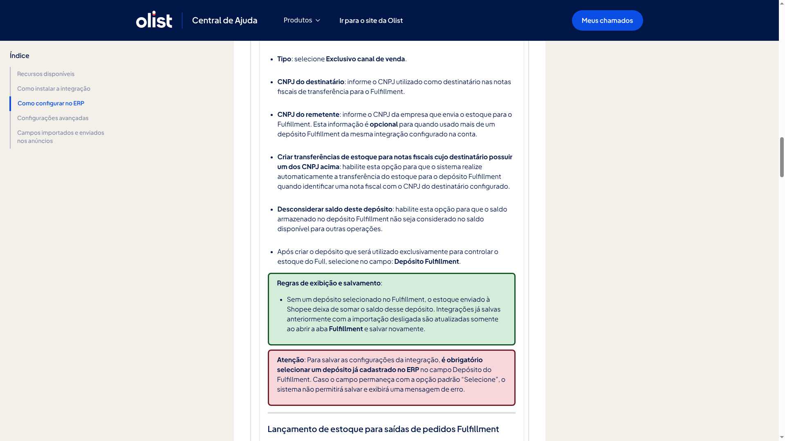
-
Revise a importação e o estoque do Fulfillment e salve a integração.
Autenticar o chat
-
Acesse Início > Integrações e abra gerenciar no card Shopee.
-
Em Autenticação Chat, confira se o estado está desconectada.
-
Clique em gerenciar para abrir a autorização da conta na Shopee. Não há formulário de senha no ERP. Conclua a autorização na Shopee. O chat permanece desconectado até essa autorização.

-
Depois do login, acesse a aba Chat e depois Vendas > Perguntas do e-commerce. A caixa reúne conversas de produto e de pedido, aceita anexos e tem filtros de não lido e lido. Pode ser necessário usar a extensão dessa tela.
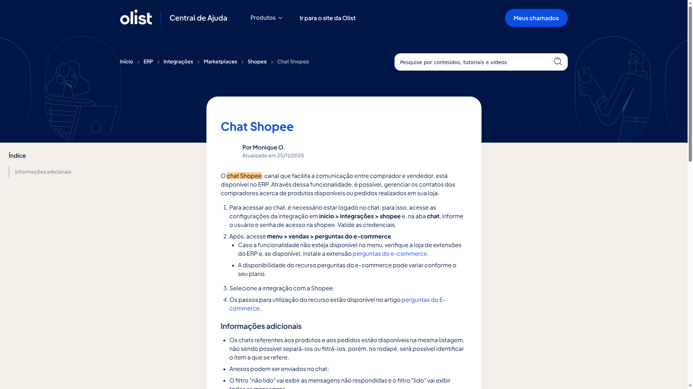
Impulsionar pelo menu de contexto
-
Acesse Cadastros > Anúncios.
-
No card Shopee, clique em gerenciar.
-
Na linha do anúncio, abra o menu de contexto.
-
Clique em Impulsionar na Shopee para enviar o impulsionamento desse anúncio.
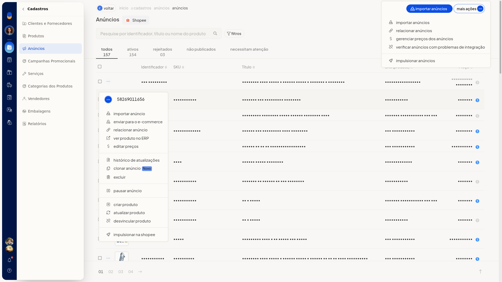
Impulsionar por Mais ações
-
Acesse Cadastros > Anúncios e clique em gerenciar no card Shopee.
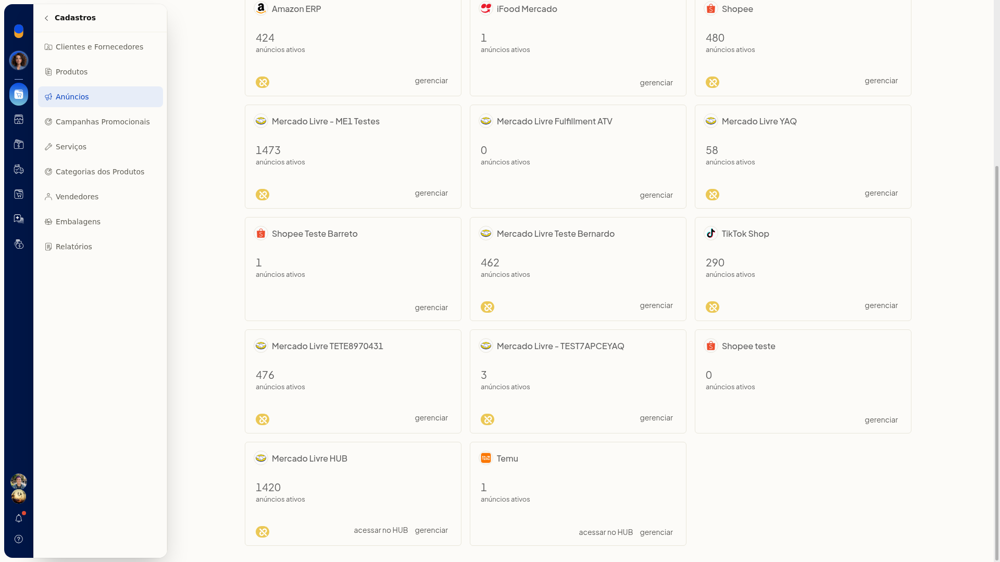
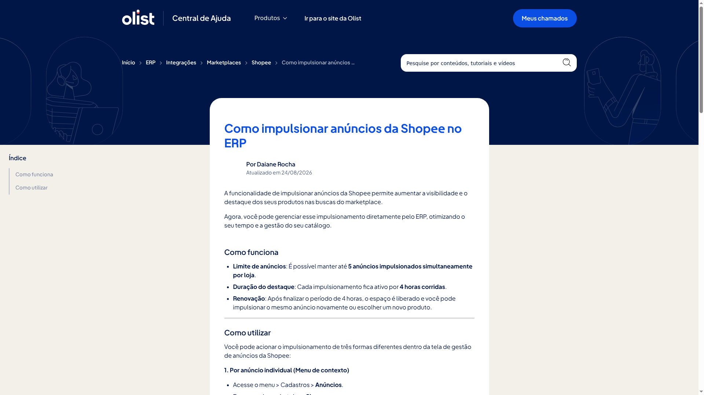
-
Na lista, clique em Mais ações.

-
Escolha Impulsionar anúncios. Abre o painel Impulsionar anúncios na Shopee, com busca, as regras de cota e os botões impulsionar, cancelar e fechar.
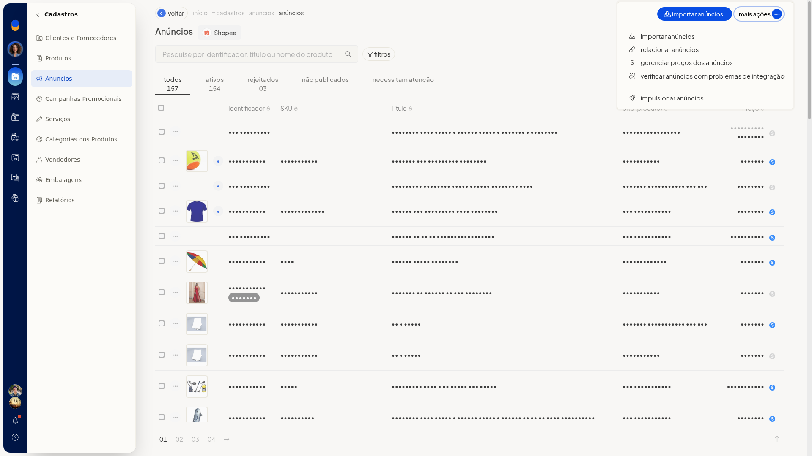
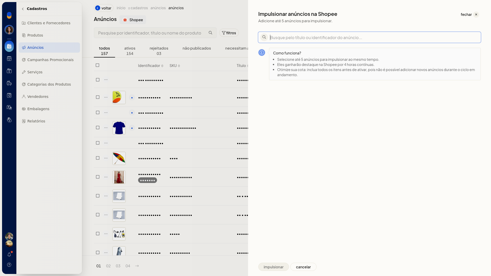
-
Busque em Busque pelo título ou identificador do anúncio, se precisar, e marque os anúncios no painel. O limite é 5. O contador inferior mostra a quantidade marcada.
-
Clique em impulsionar para enviar o destaque de 4 horas contínuas. Use cancelar ou fechar se não quiser enviar.

Impulsionar em lote pela lista
- Na lista de anúncios da Shopee, marque até 5 anúncios.
- Abra Mais ações > Impulsionar anúncios.
- Confira a seleção no painel.
- Clique em impulsionar para enviar o mesmo destaque de até 5 anúncios por 4 horas contínuas.
Informações adicionais
Situações mapeadas do canal
- UNPAID Não pago vai para Em aberto.
- PENDING Pagamento pendente vai para Em aberto.
- READY_TO_SHIP Pronto para envio vai para Pronto para envio.
- PROCESSED Processado vai para Aprovado.
- COMPLETED Finalizado vai para Entregue.
- IN_CANCEL Em cancelamento vai para Cancelado.
- CANCELLED Cancelado vai para Cancelado.
- INVOICE_PENDING Nota fiscal pendente vai para Aprovado.
- SHIPPED Enviado vai para Enviado.
As situações do ERP na lista são Em aberto, Faturado, Cancelado, Aprovado, Preparando envio, Enviado, Entregue, Pronto para envio, Dados incompletos, Não entregue e Em devolução.
Outras ações na lista de anúncios
Em Mais ações, a lista da Shopee também exibe importar anúncios, relacionar anúncios, gerenciar preços dos anúncios, verificar anúncios com problemas de integração, enviar para o ecommerce e enviar preços para o ecommerce.